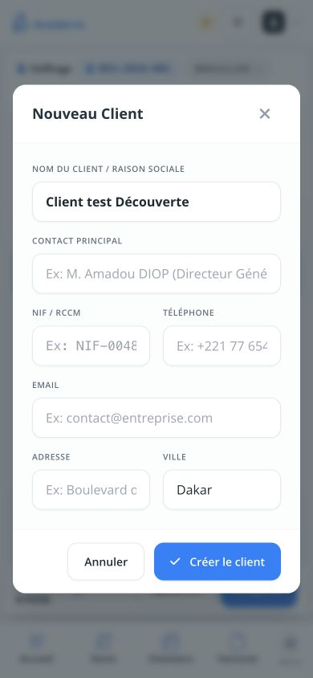

Ce qui fonctionne
L’essai sans compte est facile à trouver. La recherche « mur » retourne la maçonnerie. La surface et la marge se modifient, les montants se recalculent, l’enregistrement local est confirmé et le téléchargement PDF est annoncé par l’application.
Résultat observé : 40 m², 386 722 FCFA HT, 456 332 FCFA TTC. Ce résultat illustre le parcours ; il ne constitue pas une validation technique du prix ou de la recette de construction.
À corriger avant le piloteEnvoi masqué sur smartphone
Après Envoyer, le panneau est couvert par l’aperçu mobile. Le même panneau est visible et utilisable sur ordinateur. Étapes 15–16.
À corriger avant le piloteDescription commerciale absente
Le texte libre saisi pour préciser les travaux reste absent de l’aperçu client, en Synthèse comme en Détaillé. Étapes 8, 13–14, 17.
À corriger avant le piloteMontants affichés à réconcilier
40 × 9 668 FCFA donne 386 720 FCFA, alors que le total indique 386 722 FCFA. Un entrepreneur doit pouvoir expliquer la ligne à son client. Écart de présentation observé, sans diagnostic du moteur. Étapes 13 et 17.
Priorité au premier devisFaire confirmer les valeurs initiales
L’ajout crée 10 m² avec des prix, 30 % de marge et 5 % de frais généraux avant toute saisie. Demander la quantité puis proposer Vérifier mes prix et ma marge. Étapes 7–10.
Priorité au premier devisRendre le coût vérifiable sur téléphone
Remplacer le tableau de décomposition comprimé par des blocs par ressource, avec quantité, prix d’achat et total ; proposer Modifier mes prix dans le parcours. Étape 9.
Priorité à l’activationGuider jusqu’au compte personnel
Nom client et chantier d’abord, détails facultatifs ensuite. Après le premier devis, une action Créer mon compte et conserver ce devis plutôt qu’une consigne fugace. Étapes 2–5 et 14.
Méthode et limites
Simulation de découverte réalisée sur la version locale corrigée, par l’interface uniquement : aucun code produit ni ancien rapport consulté pour décider du parcours. Le regard neuf est simulé ; ce test ne remplace pas l’observation d’entrepreneurs réels.
Smartphone simulé 390 × 844, puis comparaison 1440 × 1000. Données fictives en mode démo ; bannière de récupération d’un ancien test écartée, sans la compter comme défaut d’une première visite. Aucun compte réel créé, paiement, email ou WhatsApp envoyé. Le PDF a été annoncé téléchargé par l’application, mais son contenu n’a pas été inspecté. Clavier natif, réseau mobile et sauvegarde cloud non testés.
Accessibilité : textes et contrôles de la fiche simple plutôt lisibles ; risques observés dans les petits libellés du tableau de coûts, les nombres cassés dans le document et le panneau d’envoi recouvert. Les noms de plusieurs champs client reposent sur des exemples plutôt que leurs libellés dans l’arbre accessible. Pas de certification WCAG, ni de test complet au lecteur d’écran.
ÉTAPE 04Créer le client
Possible, formulaire intimidant
Création disponible depuis le devis. Le formulaire demande immédiatement contact, NIF/RCCM, téléphone, email, adresse et ville ; les champs facultatifs ne sont pas distingués. Ville Dakar préremplie pour un client dont la ville est inconnue.
Ouvrir la capture en grand 